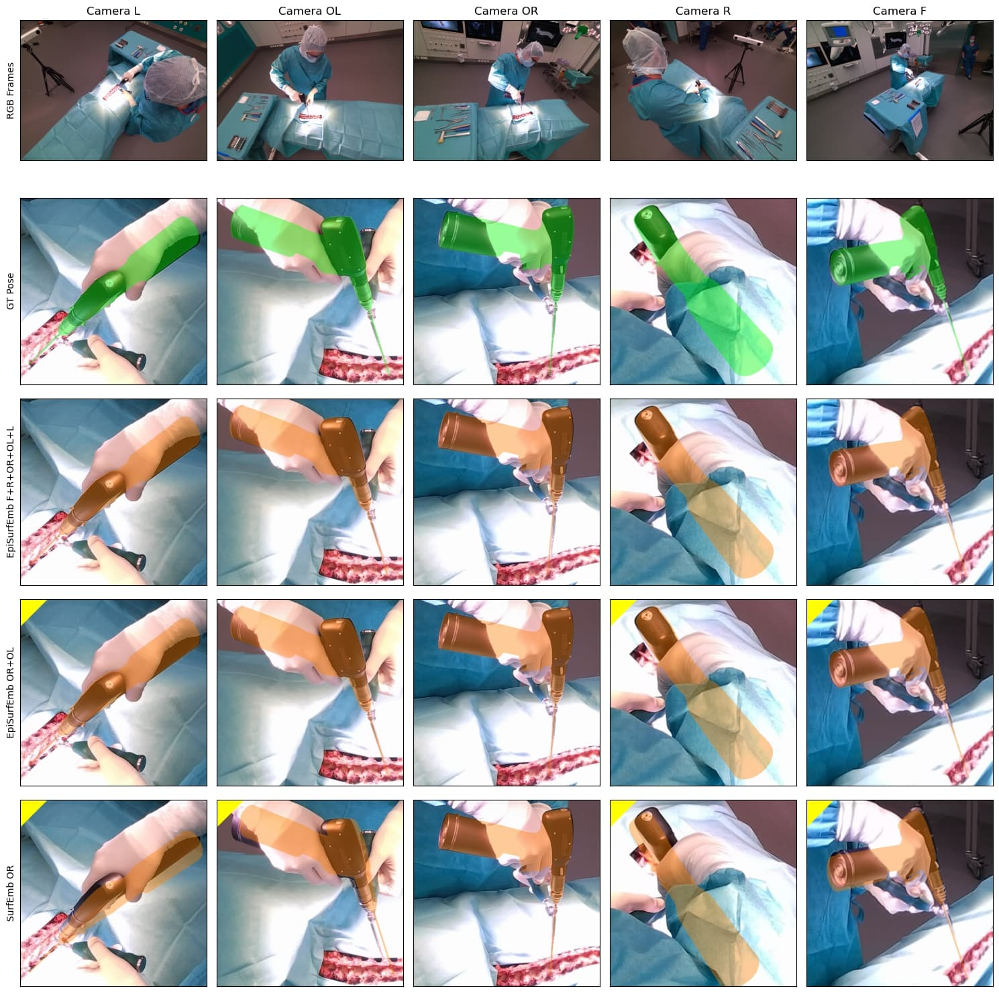
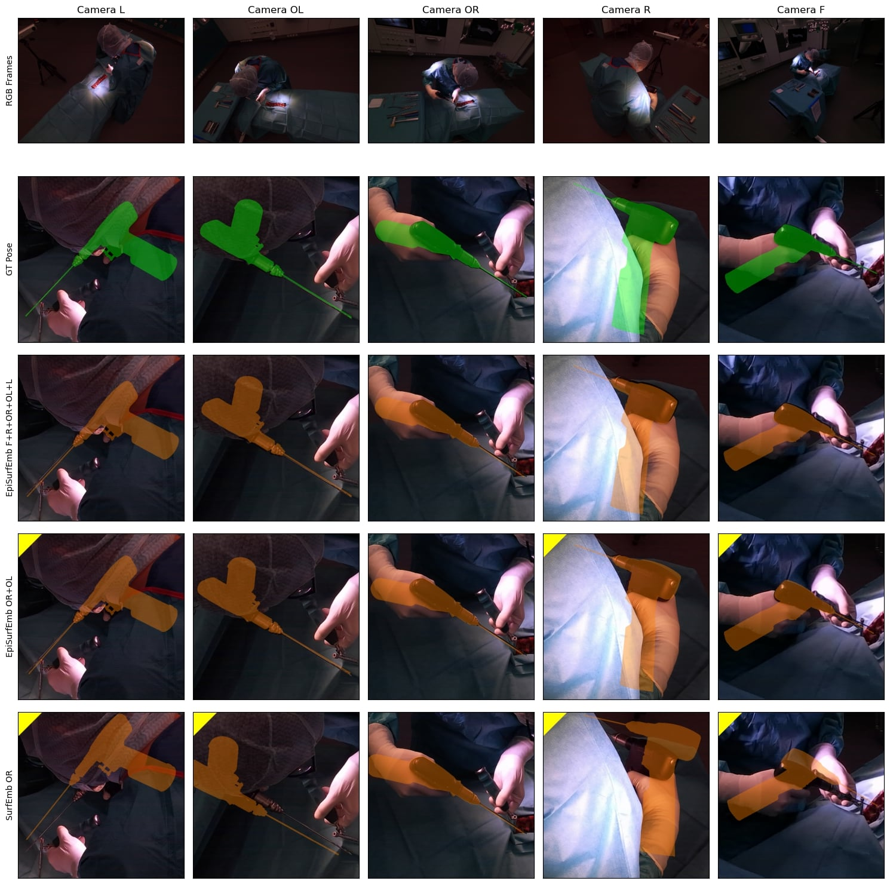

State-of-the-art research of traditional computer vision is increasingly leveraged in the surgical domain. A particular focus in computer-assisted surgery is to replace marker-based tracking systems for instrument localization with pure image-based 6DoF pose estimation using deep-learning methods. However, state-of-the-art single-view pose estimation methods do not yet meet the accuracy required for surgical navigation. In this context, we investigate the benefits of multi-view setups for highly accurate and occlusion-robust 6DoF pose estimation of surgical instruments and derive recommendations for an ideal camera system that addresses the challenges in the operating room.
The contributions of this work are threefold. First, we present a multi-camera capture setup consisting of static and head-mounted cameras, which allows us to study the performance of pose estimation methods under various camera configurations. Second, we publish a multi-view RGB-D video dataset of ex-vivo spine surgeries, captured in a surgical wet lab and a real operating theatre and including rich annotations for surgeon, instrument, and patient anatomy. Third, we evaluate three state-of-the-art single-view and multi-view methods for the task of 6DoF pose estimation of surgical instruments and analyze the influence of camera configurations, training data, and occlusions on the pose accuracy and generalization ability. The best method utilizes five cameras in a multi-view pose optimization and achieves an average position and orientation error of 1.01 mm and 0.89° for a surgical drill as well as 2.79 mm and 3.33° for a screwdriver under optimal conditions. Our results demonstrate that marker-less tracking of surgical instruments is becoming a feasible alternative to existing marker-based systems.
The dataset will be available here soon.
| OR-X Bright Test Set | OR-X Dark Test Set | |
|---|---|---|
| Synthetic Training | ||
| Synth-Real Training |
OR-X Bright Test Set
OR-X Dark Test Set
@misc{hein2023nextgeneration,
title={Next-generation Surgical Navigation: Marker-less Multi-view 6DoF Pose Estimation of Surgical Instruments},
author={Jonas Hein and Nicola Cavalcanti and Daniel Suter and Lukas Zingg and Fabio Carrillo and Lilian Calvet and Mazda Farshad and Marc Pollefeys and Nassir Navab and Philipp Fürnstahl},
year={2023},
eprint={2305.03535},
archivePrefix={arXiv},
primaryClass={cs.CV}
}